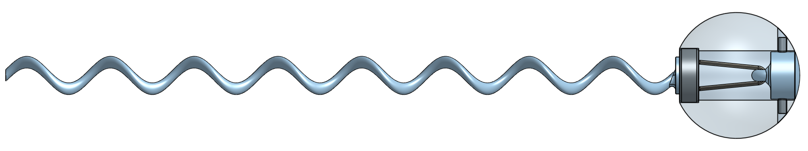
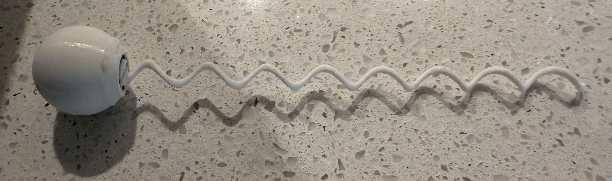
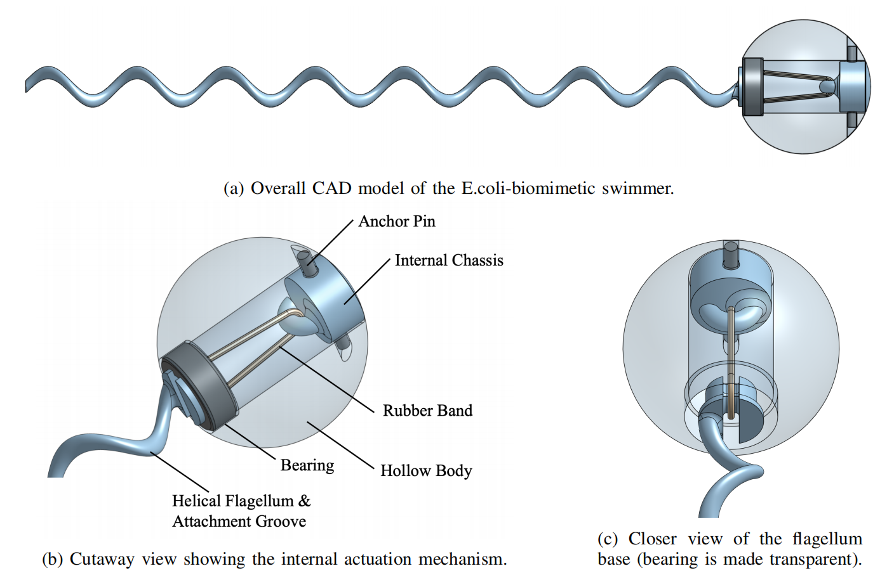

An Experimental Validation of Resistive Force Theory using a 3D-Printed E. coli Biomimetic Swimmer



Project Overview
This project involves the design and fabrication of a scaled-up, biomimetic swimmer inspired by the locomotion of Escherichia coli (E.coli) bacteria. The primary goal was to create a physical platform to investigate helical propulsion in low Reynolds number regimes, where viscosity dominates over inertia.
Design and Mechanism

The swimmer is a self-contained mechanical system designed to operate in high-viscosity fluids (glycerin). Its design mimics the biological "sphere + helix" structure of E. coli:
- Structural Components: The model features a hollow spherical body and a rigid helical flagellum, both fabricated via 3D printing. An internal chassis connects the two main segments using a rotational bearing and an anchor pin.
- Actuation System: A rubber band serves as a torsional spring, mounted between a hook on the internal chassis and the base of the flagellum. Manually rotating the spherical body relative to the helical flagellum, placing it in glycerin, and then carefully releasing it, you can witness it moving forward!
See the demonstration video below to watch the fabricated swimmer in motion.